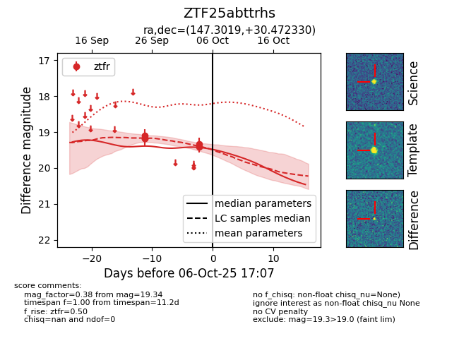
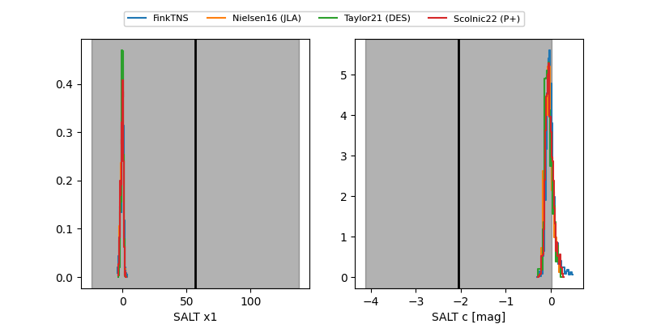

FINK: ZTF25abttrhs
Lasair: ZTF25abttrhs
ALeRCE: ZTF25abttrhs
ZTF25abttrhs (ztf,fink)
equatorial (ra, dec) = (147.3019,+30.47233)
galactic (l, b) = (196.9568,+50.20392)


last ztfr=19.34
5 ztfr detections